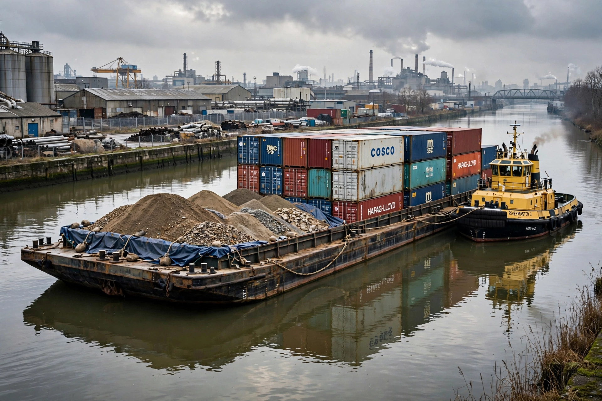

A barge is typically a flat-bottomed vessel which does not have its own means of mechanical propulsion. Original barges were tow vessels used for transportation of humans and cargo on inland waterways and canals. In modern usage, barges are generally unpowered and pulled or pushed by tugboats or towboats.

Types include dry bulk, liquid cargo (tank barges), deck barges, hopper barges, and crane barges. On systems such as the Mississippi River, barges are lashed together in tows of up to 40 barges.
Barges were central to the canal age in Britain and Europe, carrying coal and goods. Narrowboats on English canals are a specialised form.